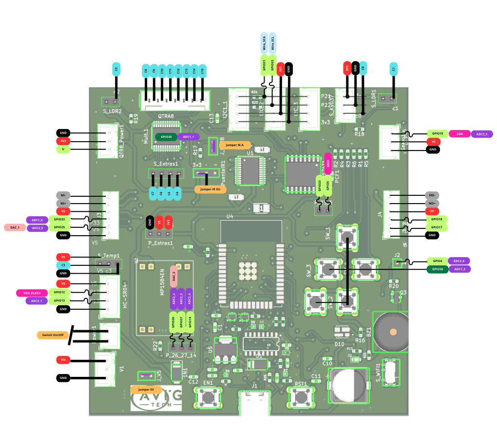

Diseño de pines para prototipado
Los pines de la placa ESP32 STEM puede usarse en su mayoría como pines de una ESP32-WROOM normal. A continuación, el uso respectivo de cada una para configuraciones adicionales y proyectos independientes.
Además, se detalla los pines y direcciones del multiplexor analógico CD74HC4067SM así como los del expansor de GPIO i2c PCF8574T

ESP32 STEM V1
Truco
El GPIO12 tiene una resistencia de 10k que al arrancar el circuito lo forza para no tener un reset de la ESP32
Control del CD74HC4067SM y PCF8574T
La dirección del PCF8574T es, los GPIO del chip controlan la dirección del multiplexor y EN del driver TB6612FNG según el siguiente detalle
Además, la lectura del multiplexor se realiza a travès del pin GPIO36
Instalación de plataforma Arduino IDE
La placa de desarrollo AVIG TECH STEM - puede ser programada a través de los siguientes software:
Arduino IDE
EspressIf IDE
PlataformIO
A continuación, se muestra la recomendación para su uso con Arduino IDE: